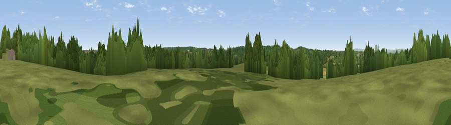

Tilkhurst Hill
#36110 in England · top 56% of its area beats it · near East GrinsteadThe view, rendered

A 360° render of this exact spot computed from the terrain model, tree cover and land cover — summer colours, afternoon light, calibrated against photographs of famous viewpoints. Real trees, hedges and buildings will differ in detail.
The panorama
Grey silhouette: terrain skyline in each direction (720 bearings, Earth curvature and refraction included). Dashed green: skyline with trees (+15 m) and buildings (+8 m) as obstacles. Blue strip: how far the ground is visible on each bearing.
Where the view opens
Wedge length = distance to the farthest visible ground on that bearing (vegetation-aware). Rings at 10, 25 and 50 km.
What fills the view
45% woodland · 40% grassland · 9% cropland · 5% built-up
Angular shares of the visible panorama (visual magnitude), not map area. Landscape diversity 0.48 (0–1 Shannon).
Key numbers
More beautiful places nearby
The staircase of upgrades: each row has a higher view potential than everything closer. Driving times are estimates from straight-line distance, calibrated against real road routing — check an actual route before setting out.
| Place | Direction | Drive | Score |
|---|---|---|---|
| Viewpoint near East Grinstead | SE · 2 km | ~6 min | 39.3 |
| Viewpoint near Turners Hill | WSW · 3 km | ~7 min | 43.3 |
| Viewpoint near Turners Hill | WSW · 3 km | ~8 min | 51.6 |
| Dry Hill | NE · 7 km | ~15 min | 55.7 |
| Viewpoint near Upper Hartfield | ESE · 11 km | ~21 min | 59.6 |
| Viewpoint near Godstone | N · 13 km | ~24 min | 62.2 |
| Gravelly Hill | N · 16 km | ~29 min | 66.7 |
| Viewpoint near Caterham Valley | NNW · 16 km | ~29 min | 68.0 |
51.11942, -0.03985 · source: dobih hill · position refined by local search. Computed location — check access rights before visiting.